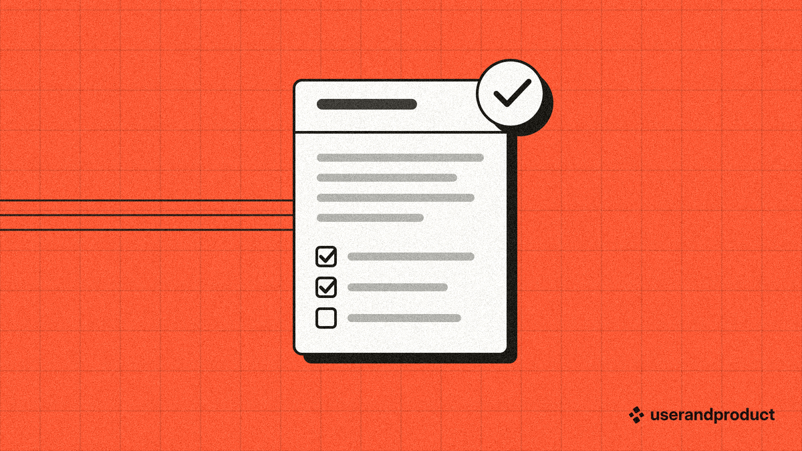
Product discovery How to Write a PRD That Engineers Actually Read Twelve questions before the first heading, six parts in a fixed order, and acceptance lines a tester can check.userandproduct: lessons in UX, product and business
Latest articles
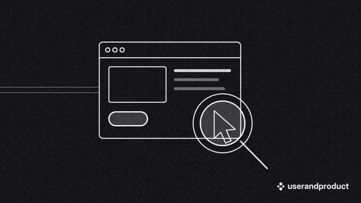
UX researchHow many users do you need for a usability test?
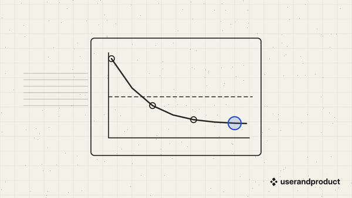
Product metricsRetention is the number that tells you the truth
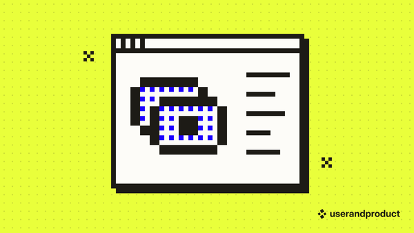
Growth and pricingHow to price a B2B product before your first customer
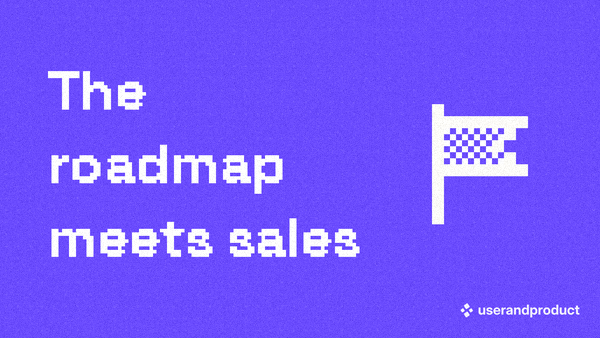
Product strategyWhy most roadmaps break on the first sales call
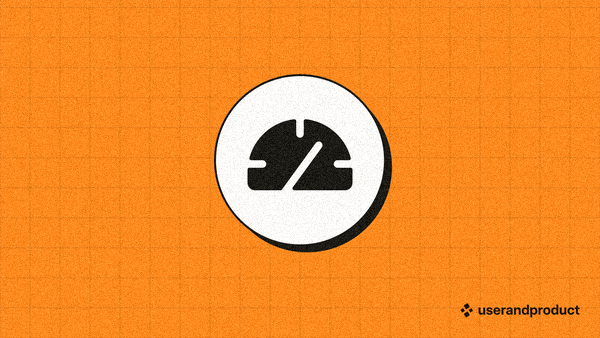
UI designDashboard design starts with one question
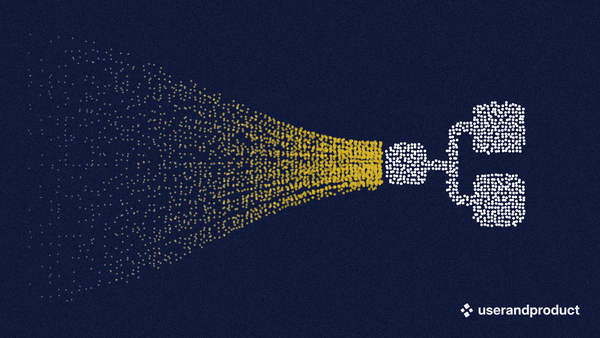
UX designInformation architecture for a product that keeps growing
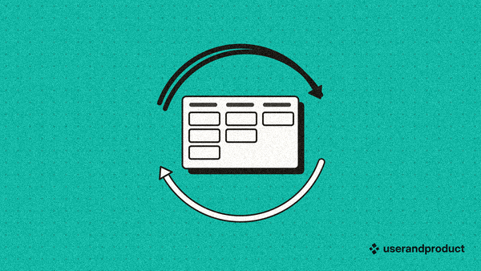
Project managementKanban or Scrum for a team of five
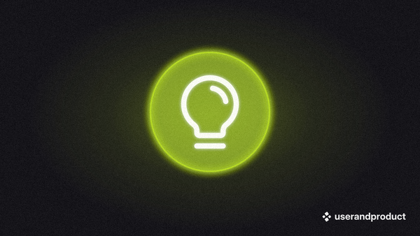
Product managementWhat a product manager does all week
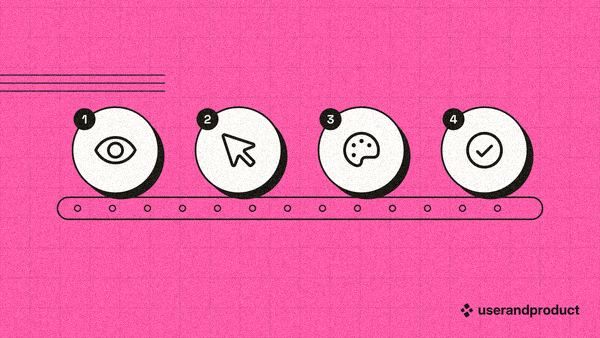
AccessibilityFour accessibility checks you can run in an afternoon
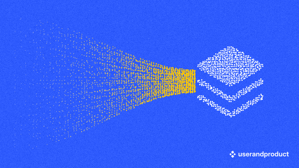
Design systemsWhat a design token is, and why engineers ask for them
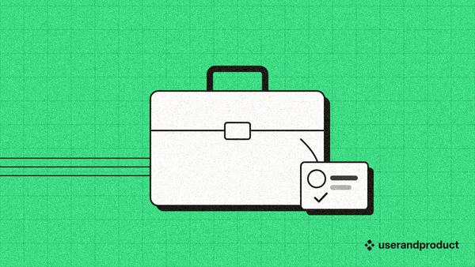
Leadership and teamsHiring your first product designer